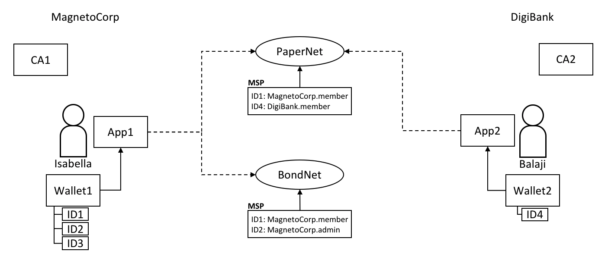

hyperledger-fabricdocs
Audience: Architects, application and smart contract developers
A wallet contains a set of user identities. An application run by a user selects one of these identities when it connects to a channel. Access rights to channel resources, such as the ledger, are determined using this identity in combination with an MSP.
In this topic, we’re going to cover:
Why wallets are important
How wallets are organized
Different types of wallet
Wallet operations
When an application connects to a network channel such as PaperNet, it selects a user identity to do so, for example ID1. The channel MSPs associate ID1 with a role within a particular organization, and this role will ultimately determine the application’s rights over channel resources. For example, ID1 might identify a user as a member of the MagnetoCorp organization who can read and write to the ledger, whereas ID2 might identify an administrator in MagnetoCorp who can add a new organization to a consortium.
ID1
ID2
 Two users, Isabella and Balaji have wallets containing different identities they can use to connect to different network channels, PaperNet and BondNet.
Consider the example of two users; Isabella from MagnetoCorp and Balaji from DigiBank. Isabella is going to use App 1 to invoke a smart contract in PaperNet and a different smart contract in BondNet. Similarly, Balaji is going to use App 2 to invoke smart contracts, but only in PaperNet. (It’s very easy for applications to access multiple networks and multiple smart contracts within them.)
See how:
MagnetoCorp uses CA1 to issue identities and DigiBank uses CA2 to issue identities. These identities are stored in user wallets.
Balaji’s wallet holds a single identity, ID4 issued by CA2. Isabella’s wallet has many identities, ID1, ID2 and ID3, issued by CA1. Wallets can hold multiple identities for a single user, and each identity can be issued by a different CA.
ID4
ID3
Both Isabella and Balaji connect to PaperNet, and its MSPs determine that Isabella is a member of the MagnetoCorp organization, and Balaji is a member of the DigiBank organization, because of the respective CAs that issued their identities. (It is possible for an organization to use multiple CAs, and for a single CA to support multiple organizations.)
Isabella can use ID1 to connect to both PaperNet and BondNet. In both cases, when Isabella uses this identity, she is recognized as a member of MangetoCorp.
Isabella can use ID2 to connect to BondNet, in which case she is identified as an administrator of MagnetoCorp. This gives Isabella two very different privileges: ID1 identifies her as a simple member of MagnetoCorp who can read and write to the BondNet ledger, whereas ID2 identities her as a MagnetoCorp administrator who can add a new organization to BondNet.
Balaji cannot connect to BondNet with ID4. If he tried to connect, ID4 would not be recognized as belonging to DigiBank because CA2 is not known to BondNet’s MSP.
There are different types of wallets according to where they store their identities:
The three different types of wallet storage: File system, In-memory and CouchDB.
File system: This is the most common place to store wallets; file systems are pervasive, easy to understand, and can be network mounted. They are a good default choice for wallets.
In-memory: A wallet in application storage. Use this type of wallet when your application is running in a constrained environment without access to a file system; typically a web browser. It’s worth remembering that this type of wallet is volatile; identities will be lost after the application ends normally or crashes.
CouchDB: A wallet stored in CouchDB. This is the rarest form of wallet storage, but for those users who want to use the database back-up and restore mechanisms, CouchDB wallets can provide a useful option to simplify disaster recovery.
Use factory functions provided by the Wallets class to create wallets.
Wallets
A Hardware Security Module (HSM) is an ultra-secure, tamper-proof device that stores digital identity information, particularly private keys. HSMs can be locally attached to your computer or network accessible. Most HSMs provide the ability to perform on-board encryption with private keys, such that the private keys never leave the HSM.
An HSM can be used with any of the wallet types. In this case the certificate for an identity will be stored in the wallet and the private key will be stored in the HSM.
To enable the use of HSM-managed identities, an IdentityProvider must be configured with the HSM connection information and registered with the wallet. For further details, refer to the Using wallets to manage identities tutorial.
IdentityProvider
A single wallet can hold multiple identities, each issued by a particular Certificate Authority. Each identity has a standard structure comprising a descriptive label, an X.509 certificate containing a public key, a private key, and some Fabric-specific metadata. Different wallet types map this structure appropriately to their storage mechanism.
A Fabric wallet can hold multiple identities with certificates issued by a different Certificate Authority. Identities comprise certificate, private key and Fabric metadata.
There’s a couple of key class methods that make it easy to manage wallets and identities:
const identity: X509Identity = { credentials: { certificate: certificatePEM, privateKey: privateKeyPEM, }, mspId: 'Org1MSP', type: 'X.509', }; await wallet.put(identityLabel, identity);
See how an identity is created that has metadata Org1MSP, a certificate and a privateKey. See how wallet.put() adds this identity to the wallet with a particular identityLabel.
identity
Org1MSP
certificate
privateKey
wallet.put()
identityLabel
The Gateway class only requires the mspId and type metadata to be set for an identity – Org1MSP and X.509 in the above example. It currently uses the MSP ID value to identify particular peers from a connection profile, for example when a specific notification strategy is requested. In the DigiBank gateway file networkConnection.yaml, see how Org1MSP notifications will be associated with peer0.org1.example.com:
Gateway
mspId
type
X.509
networkConnection.yaml
peer0.org1.example.com
organizations: Org1: mspid: Org1MSP peers: - peer0.org1.example.com
You really don’t need to worry about the internal structure of the different wallet types, but if you’re interested, navigate to a user identity folder in the commercial paper sample:
magnetocorp/identity/user/isabella/ wallet/ User1@org1.example.com.id
You can examine these files, but as discussed, it’s easier to use the SDK to manipulate these data.
The different wallet types all implement a common Wallet interface which provides a standard set of APIs to manage identities. It means that applications can be made independent of the underlying wallet storage mechanism; for example, File system and HSM wallets are handled in a very similar way.
Wallets follow a lifecycle: they can be created or opened, and identities can be read, added and deleted.
An application can use a wallet according to a simple lifecycle. Wallets can be opened or created, and subsequently identities can be added, updated, read and deleted. Spend a little time on the different Wallet methods in the JSDoc to see how they work; the commercial paper tutorial provides a nice example in addToWallet.js:
Wallet
addToWallet.js
const wallet = await Wallets.newFileSystemWallet('../identity/user/isabella/wallet'); const cert = fs.readFileSync(path.join(credPath, '.../User1@org1.example.com-cert.pem')).toString(); const key = fs.readFileSync(path.join(credPath, '.../_sk')).toString(); const identityLabel = 'User1@org1.example.com'; const identity = { credentials: { certificate: cert, privateKey: key, }, mspId: 'Org1MSP', type: 'X.509', }; await wallet.put(identityLabel, identity);
Notice how:
When the program is first run, a wallet is created on the local file system at .../isabella/wallet.
.../isabella/wallet
a certificate cert and private key are loaded from the file system.
cert
key
a new X.509 identity is created with cert, key and Org1MSP.
the new identity is added to the wallet with wallet.put() with a label User1@org1.example.com.
User1@org1.example.com
That’s everything you need to know about wallets. You’ve seen how they hold identities that are used by applications on behalf of users to access Fabric network resources. There are different types of wallets available depending on your application and security needs, and a simple set of APIs to help applications manage wallets and the identities within them.